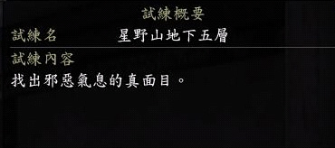
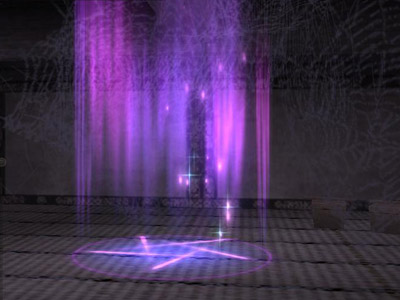
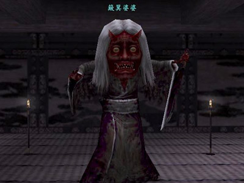
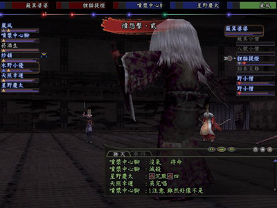

勇闖「星野山深闊洞穴」地下五層
■基本必知

■任務簡易說明：
• 透過按鍵式的方式開啟門，尋找NPC【簸箕婆婆】。
• 打倒NPC【簸箕婆婆】後，完成任務。
■行進辦法：
當玩家們突破第四層來到地下五層時，應該都會眼睛為之一亮，
眼前出現的是一個閃耀著紫色光輝的五芒星陣，而這就是第五層攻略的關鍵。
第五層通道間有許多門，這些門可分為三類：
第一類：門在開始時是上鎖的，
而上述五芒星陣就是開啟這些門的「開關」，
玩家必須踩在五芒星陣上，其相對應的門方可開啟，如果再踩一次就上鎖，以此類推；
第二類：門一開始是未上鎖的，但踩了相對應的五芒星陣會鎖上，必須再踩一次相對應的五芒星陣才會再度開啟；
第三類：門保持開放，無論踩了哪一個五芒星陣都不會鎖上。
地圖上，這三種門以不同的圖例標示，大寫國字數字表示五芒星陣的位置，相對的阿拉伯數字則是踩住該五芒星陣後會開關的門；
例如踩下起點處的「一」可以開啟下方的「1」門；而若某扇門標示多個小寫字母，
如左下角房間的門標示為「46」，
則可開啟此門的開關有「四」以及「六」兩處。
至於行進的順序，要依隊伍需求而定，如果希望開寶箱、拿寶物，那麼慢慢嘗試盡可能將所有路線都走一遍。
而如果是要快速過關，可能就需要花一點心思規劃路線了。
因為有的五芒星陣對應不只一個門，故在規劃路線之時還需要做一點計算，才不會浪費時間。
例如，到簸箕婆婆所在處的房間，有「9」門需要開啟，而與「9」門相對應的五芒星陣「九」在地圖的右下角，
要前往該處又需要開啟「7」門、而要前往五芒星陣「七」處則需開啟「79」或「1 3 10」門……依此回推，作為設計路線的依據；
因為有些門（在地圖上以黃線表示）在踩下五芒星陣後會關閉，因此下次要開啟時需要再踩一次對應的五芒星陣，必須列入規劃路線的條件中。
建議路線：
只打王：一二四三六五六七九八六五三二 簸箕婆婆
打王兼開寶箱：一二/四A四+三六五二B七三四/一C一+五二五六九D八六E/十八+F五 簸箕婆婆 ( / 為派遣支隊 +為主支隊合併)
這一層的過關條件很簡單，就是打倒南方房間內的「簸箕婆婆」。因此如果只要打王，只要按照上面的路線循序按下五芒陣即可。
建議的路線或許稍微重複，主要是考量預先打開一些門，這樣如果打王滅團而必須從起點跑時，可以減少一些時間。
如果是打王還要兼開寶箱，路線勢必較為複雜，因為每一扇門的連動性，
將使的隊伍有時還要「預留伏筆」，
預先按下某個五芒星，免得到時重跑或甚至卡死。
另一方面，基於有些門的「互斥」現象存在，使得隊伍要達到有些寶箱所在的房間時，必須要分頭行動才行。
以開啟C房間的寶箱來說，房間門是「1」，預設是開著，但它的關連五芒星就是一開始一定要按的「一」，
要從起點出發一定要按「一」，但如此一來C房間門就會鎖上，也就是說C房間門與起點房間門「1」兩者是互斥的，
這個時候如果隊伍不分成兩邊，一邊按五芒星，另一邊開寶箱，是不會成功的。
不過這樣做法自然有著分團被滅的危險，因此如果決定要開那些房間的寶箱，之前在前進時最好就把所有怪都清掉，以免分頭辦事時發生意外。
第五層的關卡可以說相當複雜，本文提供的路線或許不是最有效率的，不過大家集思廣益，或許可以找到更好的做法也說不定。
■「星野山深闊洞穴」地下五層怪物名稱
怪物名稱 |
等級 |
體數 |
掉落道具 / 目錄 |
備註 |
怪傘 |
54-55 |
3-5 |
— |
|
徘徊大蛾 |
55-56 |
4-5 |
— |
識破隱身 |
骨傘 |
54-56 |
3-4 |
— |
|
陰險河童 |
55-56 |
3-5 |
— |
識破隱身 |
青和尚 |
53-55 |
4-5 |
— |
|
招來禍害 |
55-56 |
3-4 |
— |
|
夢魂 |
55 |
4 |
— |
識破隱身 |
妖怪葛籠 |
49-53 |
1 |
— |
識破隱身
（打開葛籠之後，可能會出現的怪，建議開完立刻離開，或是不動讓神職睡怪） |
■「星野山深闊洞穴」地下五層BOSS名稱
怪物名稱 |
等級 |
體數 |
掉落道具 / 目錄 |
備註 |
簸箕婆婆 |
56 |
7 |
地靈的?石【首飾】 |
藍色NPC（BOSS），需打倒才能進入B6(擊倒後會出現藍葛籠) |
■BOSS「簸箕婆婆」攻略法：
名稱 |
種類 |
等級 |
初期賦予 |
使用技能 |
簸箕婆婆 |
妖怪 |
56 |
反射結界▲ |
鬼?怨言‧壹～貳、憤怨擊‧壹～貳、陰陽系法術、天懲、煙消霧散、甦醒‧壹、結界‧參 |
簸箕小僧 |
妖怪 |
56 |
|
舔來舔去‧極、鬼火、全體識破、妖打擊‧壹～極 |
八號小僧 |
妖怪 |
56 |
結界 |
舔來舔去‧極、鬼火、召雷‧參、陰陽系法術、妖打擊‧壹～極 |
貍貓提燈 |
妖怪 |
56 |
|
吟唱之韻‧極、鬼火、奔雷、虛脫之咒 |
招來災難 |
妖怪 |
56 |
|
防禦咒霧‧肆、全體完全治療、吟唱之韻‧極、鬼火、抓來抓去、河童的水藥、甦醒‧壹 |
野小僧 |
精靈 |
56 |
|
乏力之舞、 |
野小僧 |
精靈 |
56 |
|
乏力之舞、 |
經過讓人頭昏腦脹的迷宮，來到南面房間，玩家即將面對的，
是與TD「安計呂山的庵」的頭目「食人婆」長得很像的「簸箕婆婆」，而它們的技能也有雷同的地方。
這個頭目的組合無準備法術很多，有密教僧或忍術忍同行將會輕鬆很多。
「簸箕婆婆」法術抗性極高，真太極僅能造成2499的傷害，物理攻擊抗性也很高，是個棘手的怪物。
其特殊技能「鬼咒怨念．壹」與「鬼咒怨念．貳」殺傷力很強，是無準備的無屬性全體法術，無視防禦力，
會造玩家生命力25%及50%的傷害，還會使氣合減少，更麻煩的是「鬼咒怨念」無法以「沈默」封住，因此在面對如此難纏的對手，
有一個玩家固定牽制其行動可能會是必要的。例如「刀背擊」、「發麻斬」、「禁咒．絕」、「大喝」等。
而「憤怨擊」屬於近距離攻擊，攻擊力很強，盾役一定要固定住，否則後衛應該都是不堪一擊。
除此之外，簸箕婆婆會陰陽師各級四方大法，也需謹慎應對。
會「吟唱之韻．極」的「貍貓提燈」以及會「防禦咒霧．肆」的「招來災難」可優先擊殺，否則隊伍將面臨連續大法或盾役守護失效的危機。
兩個獨眼小僧對於鍛職盾役造成很大威脅的「舔來舔去．極」，如同前兩層面對同類型的怪物一樣的作法，
盡量以「咒縛」、「催眠」、「定身術」之類的法術牽制住；若隊伍中有武士道，則其威脅會降低。
這個組合除了簸箕婆婆以外，對物理攻擊的抗性較低，武藝侍、暗殺忍等近戰系玩家將會有很大的發揮空間。
擊敗簸箕婆婆後，有可能獲得全職業鈞可裝備的頭部裝備「地靈的?石」。
■主要掉落物
各式格式帳、高級染料（紅藍綠黑）、魔怪的爪、魔怪的牙、魔怪的膽、魔怪的硬皮、羚羊角、桂皮、麝香、
伐採大斧【特殊裝備】、
、
挖炭手套【特殊裝備】、採掘鑿子【特殊裝備】、採草藥人的鐮刀【特殊裝備】、
招財貓【家具】、古代岩石【任務】、、妖怪點心、高級妖怪點心、妖怪茶葉
■開啟葛籠可能獲得的物品
刃之大鎧【大鎧】、兔耳盔飾、二重鍬形盔飾，以及各種+5、+100的入魂石
| 「星野山深闊洞穴」地下五層 小相本 |
|
 |
|
|
|
 |
 |
|
除了盾役，簸箕婆婆的憤怨擊都是一擊必殺。 |
| |
|
※若圖片中無意拍攝到您的姓名，而您又不希望公開的朋友，我們向您道歉，也希望您 來信告知，小綾會將您的名字改為馬賽克的＠＠
※本區圖片會再陸續新增，也歡迎各位 來信投稿，無須裁圖，我們會幫忙處理，只要附上圖片清楚說明即可^^
|